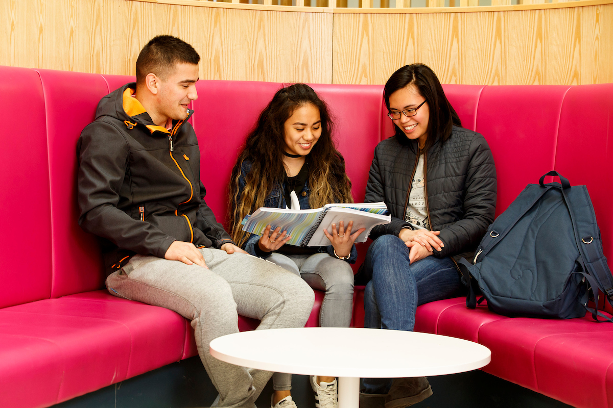
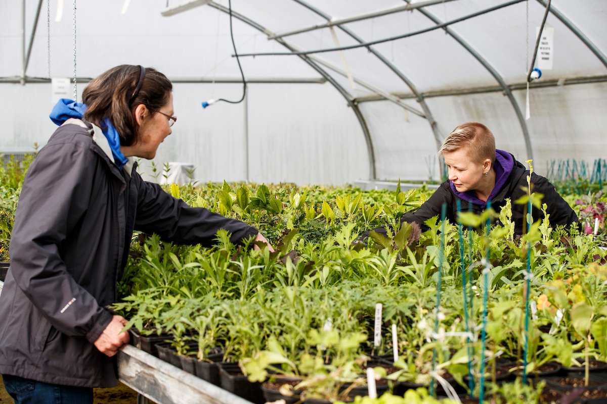
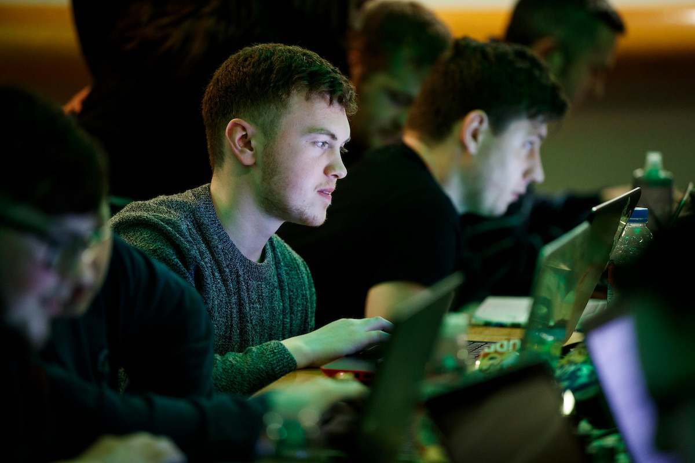
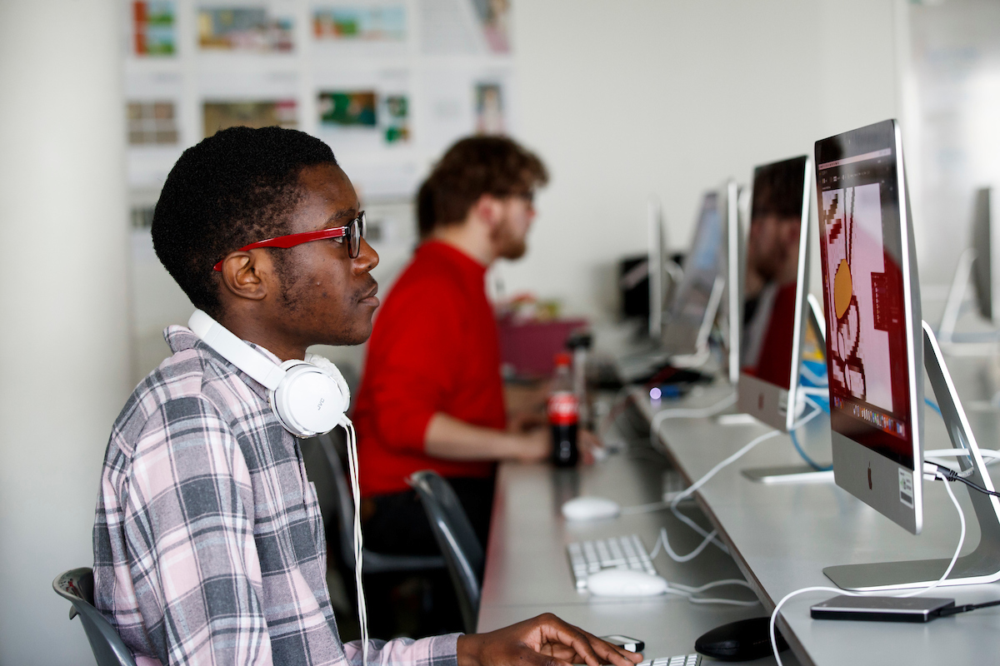
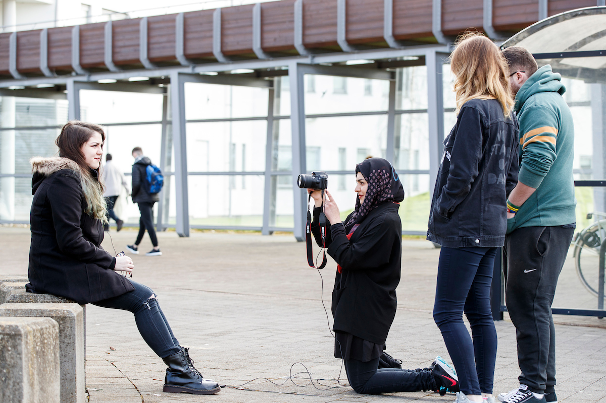
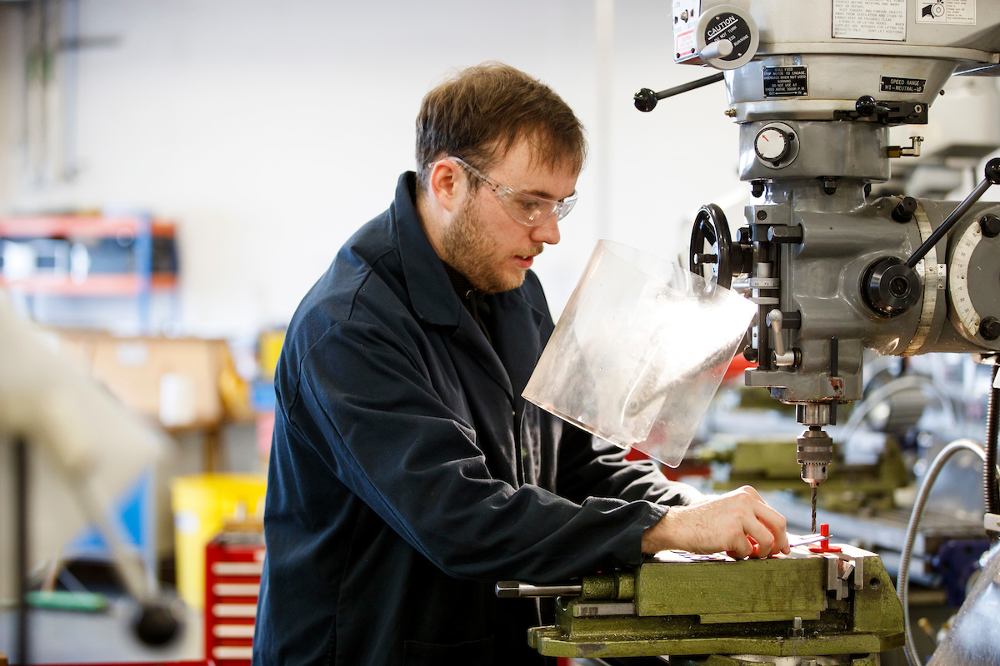
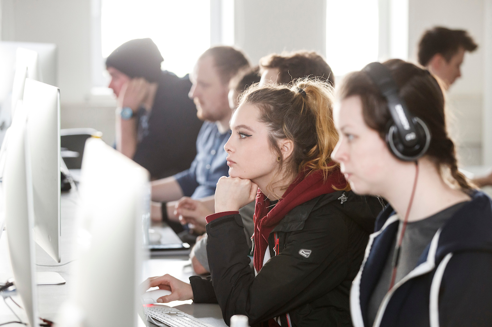
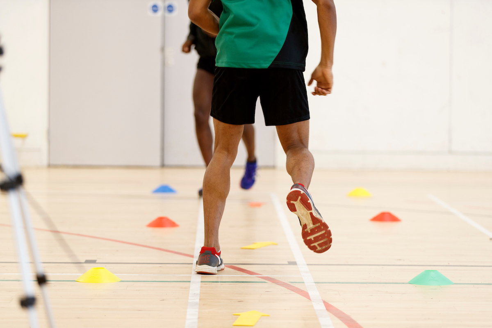
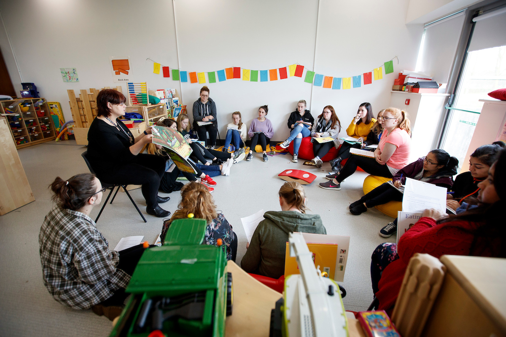

THE STORY OF ITB
CAPTURING ITB'S MOMENTS
ITB'S STUDENTS
The college initially started with only 4 courses but has now expanded to many more such as
- Business
- Computing
- Creative Digital Media
- Engineering
- Horticulture
- Sports









THE STORY OF ITB
ITB will inevitably be no more soon as DIT, ITT and ITB will be merging together and becoming a Technological University known as TU Dublin. Even though this is something great as it will become beneficial to all students in many ways, the institute does not want to forget the history that made it become the college that it is today. ITB’s campus was not what it was 20 years ago, Courses have been added, as well as new buildings and facilities. The aims and objectives of the client would be to reminisce on the college and how it developed to become what is now before the transition into becoming a University